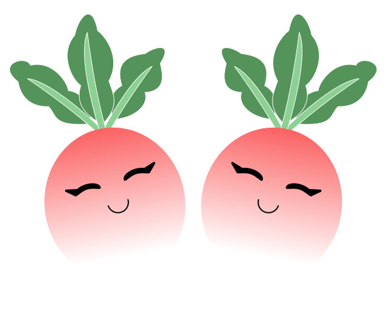

A Little Kindness Goes a Long Way
October 4th, 2023
It would be a lot easier to feel good about ourselves if we only saw sunny days, full of success and achievement. Unfortunately, that's not how life works. So, how can we see the rainbow after a storm? In other words, how can we learn to love and see the beauty in ourselves during times of failure?
Self-Esteem
Self-esteem is the positive evaluation of ourselves. It is often in comparison to others and is heavily influenced by social feedback. For instance, winning a competition or receiving praise can boost your self-esteem. On the contrary, losing or receiving criticism can lower your self-esteem. As you can see, self-esteem can easily fluctuate depending on the circumstance. As a result, it can be challenging to maintain a high self-esteem throughout all the ups and downs we experience. Self-compassion, however, can help us develop more stable feelings of self-worth and is especially important for coping with failure.
Self-Compassion
Unlike self-esteem, self-compassion is a more inward perspective of yourself. It allows you to see yourself more clearly, identify and evaluate your weaknesses, and move past failure with an effective focus. Self-compassion's three main pillars are self-kindness, common humanity, and mindfulness. A person high in these three elements will have high self-compassion.
Self-Kindness
Self-kindness is accepting your mistakes and failures and treating yourself with warmth and understanding. Essentially, treat yourself with the same kindness you would treat a friend.
Common Humanity
Common humanity is recognizing that you are not alone in your experience. Everybody experiences suffering, pain, and failure. It is viewing your experiences as part of the larger human experience.
Mindfulness
Mindfulness is being aware of your thoughts and feelings. It involves acknowledging all your emotions and letting in both the good and the bad. It is not overly identifying with, avoiding, or repressing painful thoughts.
Benefits of Self-Compassion
- Better mental health
- More optimism
- Better sleep
- More social connectedness
- More intrinsic motivation
- Better stress management
- Less self-criticism
- Decreased rumination
- Less fear of failure
Building Self-Compassion
There are many practices that you can incorporate into your life to help you build your self-compassion! Dr. Kristin Neff's self-compassion website features a variety of really great self-compassion guided meditations and exercises.
3 comments
Taylor
This was a great reminder about how important it is to be kind, patient, and understanding with oursleves. After all, we're only human!
James
So glad I saw this post. I tend to be extremely hard on myself. I think I could use a little more self-compassion.
Emily
Thanks for sharing this valuable message! It's easy to compare ourselves to others and seek validation from our achievements.